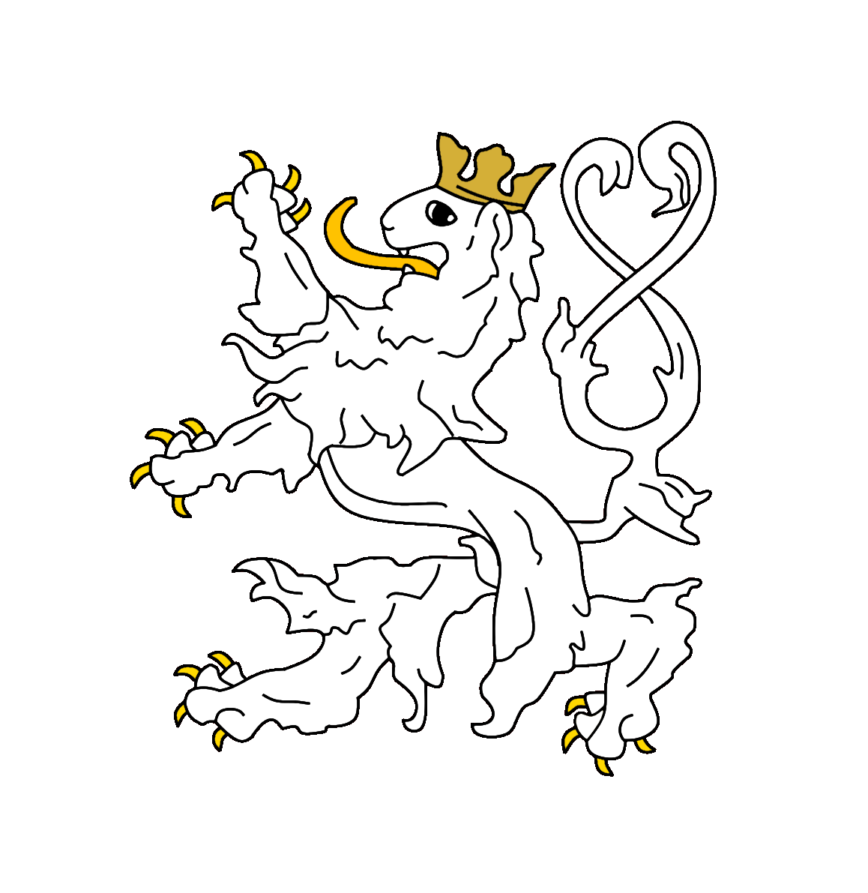

Jeho hraběcí Excelence,
Jakub Kořínský z Kokořína
z Boží vůle hrabě kokořínský král uherský a český, lombardský a benátský, dalmatský, chorvatský, slavonský, haličský, vladimiřský a illyrský;
arcivévoda rakouský, velkovévoda toskánský a krakovský;
vévoda lotrinský, salcburský, štyrský, korutanský, kraňský a bukovinský;
velkokníže sedmihradský, markrabě moravský;
vévoda horno- a dolno- slezský, modenský, parmský, piacenzský a guastalský, osvětimský a zátorský, těšínský, furlanský, dubrovnický a zadarský;
knížecí hrabě habsburský, tyrolský, kyburský, goricijský a gradišťský;
kníže tridentský a brixenský;
markrabě horno- a dolno- lužický a istrijský;
hrabě hohenembský, feldkirchský, břežnický, sonnenberský;
pán terstský, kotorský a na slovinském krajišti;
velkovévoda srbský et cetera.
L.P. 2026, Kokořín (hl. město říše), Hrabství Kokořínské
arcivévoda rakouský, velkovévoda toskánský a krakovský;
vévoda lotrinský, salcburský, štyrský, korutanský, kraňský a bukovinský;
velkokníže sedmihradský, markrabě moravský;
vévoda horno- a dolno- slezský, modenský, parmský, piacenzský a guastalský, osvětimský a zátorský, těšínský, furlanský, dubrovnický a zadarský;
knížecí hrabě habsburský, tyrolský, kyburský, goricijský a gradišťský;
kníže tridentský a brixenský;
markrabě horno- a dolno- lužický a istrijský;
hrabě hohenembský, feldkirchský, břežnický, sonnenberský;
pán terstský, kotorský a na slovinském krajišti;
velkovévoda srbský et cetera.
L.P. 2026, Kokořín (hl. město říše), Hrabství Kokořínské
O Urozené Osobnosti Mé
Narodil jsem se pravděpodobně omylem do nesprávného století. Zatímco má duše prahne po aristokratickém typu života a řešení diferenciálních rovnic u krbu, osud mě uvrhl do SOU Elektrotechnického, kde jsem nucen zabývat se tak přizemními věcmi, jako je tok elektronů v drátech.
Rád bych se stal učitelem matematiky a geografie, abych mohl budoucí generace týrat u tabule stejně stoicky, jako tady týrají mne.
*mrk* *mrk* Zábrodský
Umění a Vědění
Vysoké Počtářství
(Matematika) Chci jít na FAVku, protože mě baví trápit se nad rovnicemi, které nikdo nikdy nepoužije. Je to masochismus, ale aspoň u toho nemusím nosit montérky.
Imperiální Výboje
(Geografie) Neznám země, znám jen budoucí provincie. Má orientace je skvělá – vždy vím, kterým směrem je hrad Kokořín a kde leží nejbližší kořist.
Písmo Strojové
(IT) Když ten krám nefunguje, pošlu ho do vyhnanství. HTML píšu s odporem šlechtice, který musí sáhnout na lopatu. Kód nekompiluji, kód popravuji.
Dějeprava
(Historie) Většinu světových válek považuji za zbytečné administrativní chyby, kterým se dalo předejít, kdybych tam byl. Učím se nazpaměť pouze vítězství; prohry mých předků považuji za taktický ústup do předem připravených pozic.
Královské Archivy & Spojení
Pro ty, kteří chtějí nahlédnout do mých digitálních podzemí nebo se mnou navázat diplomatické styky na mezinárodní úrovni.
📜
GitHub (Královský Depozitář)
Zde skladuji skripty, které jsem byl donucen napsat pod hrozbou propadnutí. Vstup na vlastní nebezpečí.
🤝
LinkedIn (Dvorní Rejstřík)
Máte-li pro mne uvolněný trůn, katedru matematiky nebo jinou honosnou sinekuru, spojte se se mnou zde.
🖼️
Instagram (Obrazárna)
Výjevy z mého života.
Suplika pro Hraběcí Excelenci
Máte-li pro mne dotaz hodný mého intelektu, využijte tento pergamen. Holub bude připraven k odletu okamžitě.